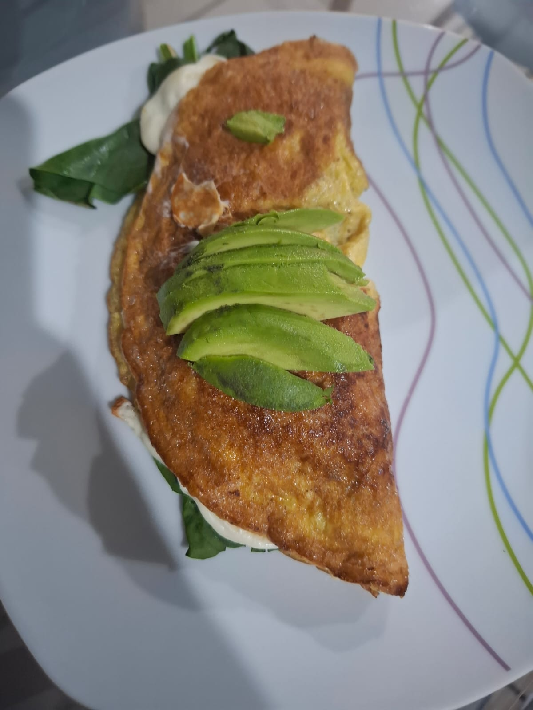

Omelett de queso y espinacas

Descripción:
Si buscas una opción saludable y práctica para desayunar, este Omelett es tu opción ideal.
Con esta receta dejarás de ver los huevos como una opción aburrida y disfrutarás de esta maravillosa fuente de proteína.
Ingredientes:
- 2 huevos
- 50 gramos de espinacas frescas y desinfectadas
- 30 gramos de queso mozzarela
- 1/2 aguacate
- sal y pimienta al gusto
Procedimiento:
- Bate los huevos con sal y pimienta.
- Vierte los huevos batidos sobre un sarten precalentado.
- Espera a que este cocido y voltea.
- Aplica el queso mozzarela y las espinacas.
- Dobla por la mitad y tapa a fuego bajo por 5 minutos.
- Sirve y acompaña con medio aguacate
Si lo prefieres puedes acompañar con una ensalada fresca para mayor saciedad.
Inicio